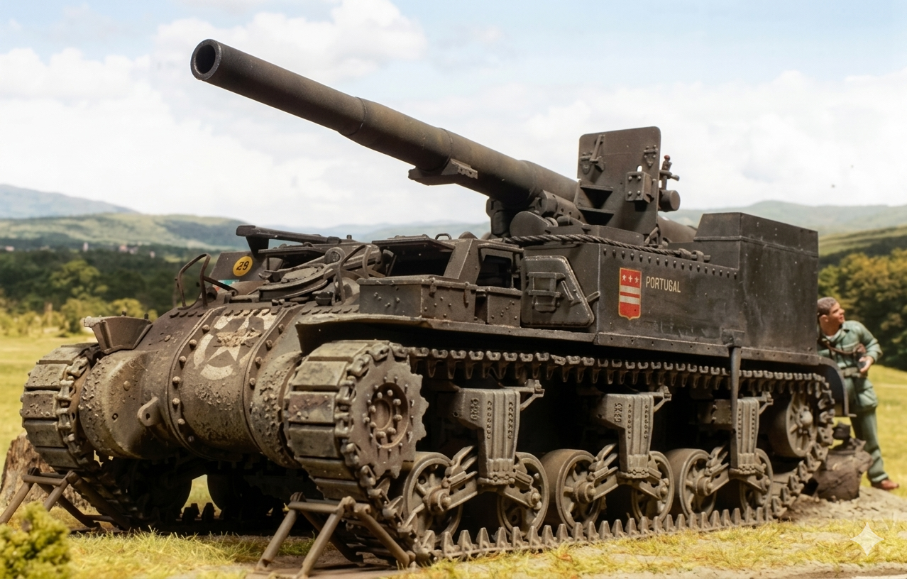

M12 Gun Motor Carriage
Призначення: важка самохідна артилерійська установка для руйнування ліній оборони. Країна: США. Роки виробництва: 1942-1943. Експлуатація: 1943-1945. Кількість: 100 шт. Озброєння: 155-мм потужна гармата M1917 / M1918 (колишня французька GPF). Броня: 12.7-50 мм (гарматна обслуга практично не мала захисту ззаду). Маневреність: 38 км/год, двигун Continental. Екіпаж: 6 осіб (водій, командир та розрахунок гармати). Суть у бою: обстріл ворожих укріплень з наддалеких дистанцій. Проте у Європі американці часто використовували M12 для стрільби прямою наводкою по німецьких бетонних дотах лінії Зігфріда, де один 155-мм снаряд повністю вирішував проблему. Відомі битви: Битва за Нормандію, прорив лінії Зігфріда. Цікава особливість: через велику віддачу на кормі САУ було встановлено величезний сошник (лопату), який перед стрільбою опускали в землю, перетворюючи машину на нерухому вогневу позицію. Також через брак місця САУ возила з собою лише 10 снарядів, решту транспортувала спеціальна машина.
